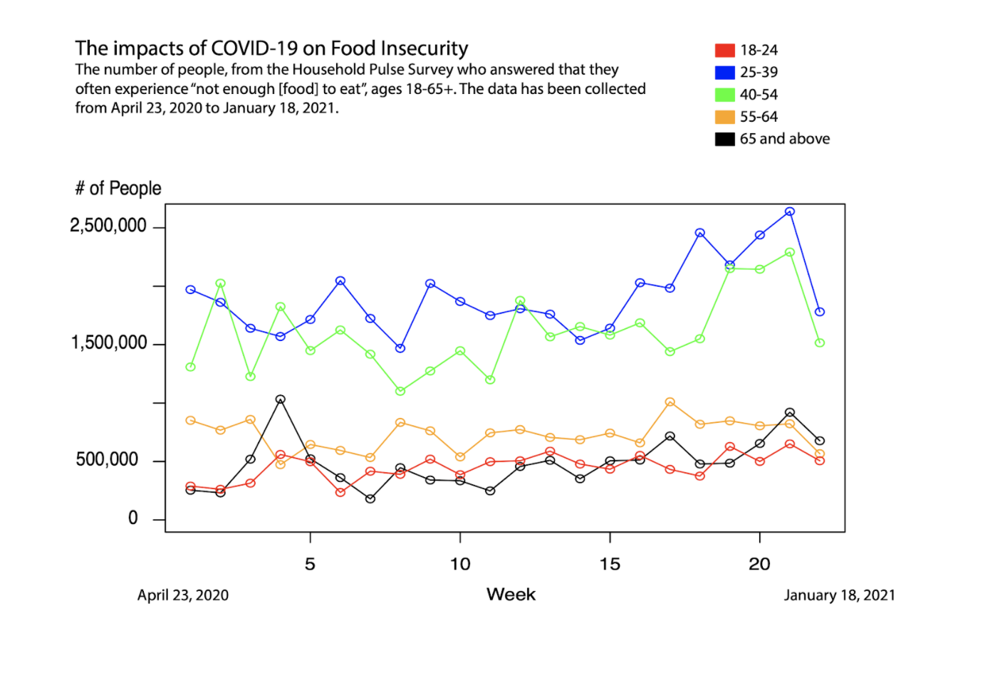
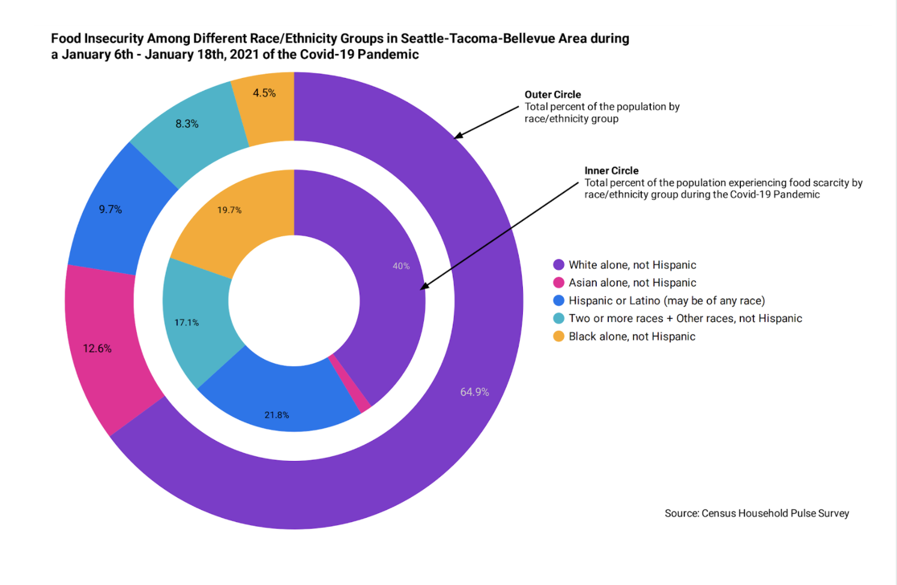
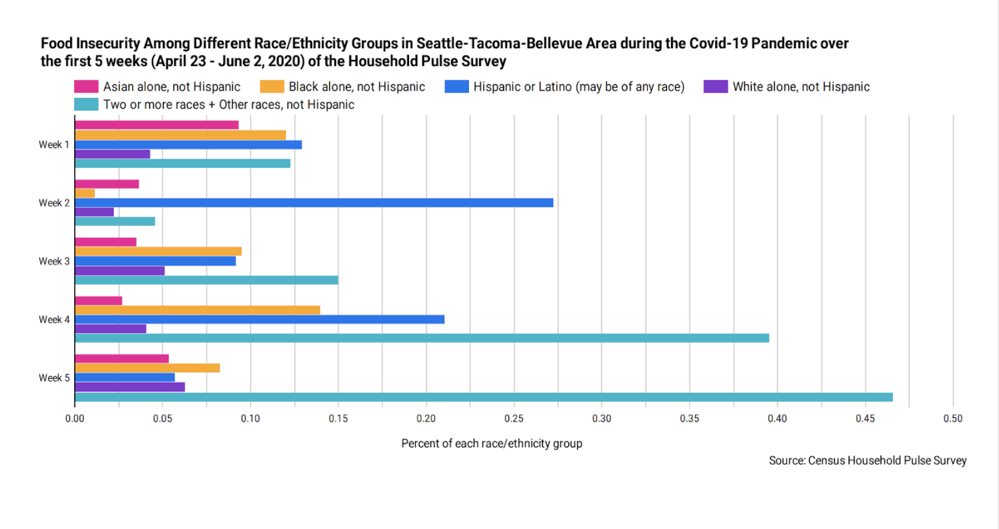
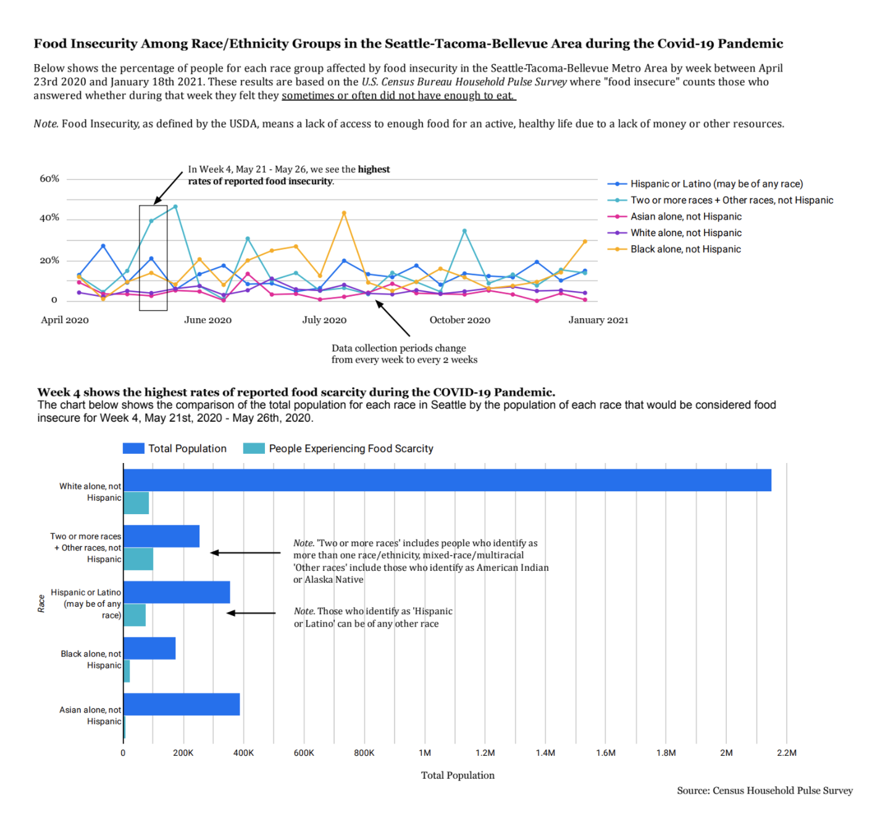

In my data visualization class during winter 2021, my team and I worked on a project to visualize food scarcity during Covid-19 and how that impacted Seattle-Tacoma-Bellevue residents. The data comes from the United States Census Bureau Household Pulse Survey. It is an ongoing survey to measure the social and economic impact of the coronavirus pandemic and aid the nation's recovery. The Census Bureau gathers participants by randomly selecting their address and contacting them through email or text message, in which their answers to the survey are used to represent the entire population. My responsibilities included overseeing the project's research, which included developing a user interview protocol and collaborating with the lead visualizer to create a user-friendly and interactive visualization.
There were a few ethical issues to consider during this project. Since we're looking at a sensitive issue that affects vulnerable people, I think it's crucial to be aware of these ethical concerns. Here are the ethical concerns that my teammates and I identified as the most prominent. We are examining vulnerable populations in this visualization. Food scarcity and food insecurity are serious problems that are affecting real people in our community. We want to remain conscious that this visualization symbolizes the food insecure population of the greater Seattle area, and therefore represents a lot of suffering. Furthermore, our dataset did not include Native American populations as an ethnic group, which limits our understanding of how food insecurity impacts our community. We acknowledge that this dataset represents households on the ancestral Duwamish territories, and they deserve to be represented as well. It is not our intention to ignore Indigenous suffering caused by food insecurity and systemic ignorance. This visualization can therefore be anxiety inducing to certain populations. Our intention is to accurately represent food insecure populations in the Seattle area without judgement. Audience members who belong to non-white ethnic groups may feel distress when seeing their racial group being disproportionately impacted by the Covid-19 pandemic. The users we selected for user testing did not experience food insecurity for the duration of the pandemic and are appropriately biased. We are using color to clearly differentiate between different ethnic populations. We tried to pick colors that are distinct enough for color blind people to be able to distinguish between the ethnic groups.
Our first wireframe included visualization on food scarcity among different age groups during Covid-19. However, after conducting our user-interview, we realized that we wanted to make data that could be more generalizable to a larger population so we rather decided to focus on race/ethnicity. We used R and Google Data Studio to create the following visualizations below.   
Our final visualization focused on ethnic demographics.Our change was motivated not only by the desire to represent a larger demographic, but also by the fact that this data was much more personal to both my teammates and myself. As a black woman, I am aware of the social inequities that exist in my community when it comes to food insecurity. Covid-19 has aggravated the issue even further. The use of data visualizations like this allows us to see disparities in a more contextualized and meaningful way.
